The 350m-long Terrace of the Elephants was used as a viewing stand for public ceremonies and served as a base for the king's audience hall. Try to imagine the grandeur of the Khmer Empire at its height, with infantry, cavalry, horse-drawn chariots and elephants parading across Central Square in a procession, pennants and standards aloft. Looking on is the god-king, shaded by multi-tiered parasols and attended by mandarins and handmaidens bearing gold and silver utensils.
Meanwhile the Terrace of the Leper King dates from the 12th century and is a 7m-high platform on top of which stands a nude, but sexless, statue. The statue was called the "Leper King" because discolouration and moss growing on it was reminiscent of a person with leprosy, and also because it matched a Cambodian legend of an Angkor King, Yasovarman I, who had leprosy. The front retaining walls of the terrace are decorated with at least five tiers of meticulously executed carvings.
On the day we visited, the whole site was swamped with armed guards as the President of Cambodia was paying a visit.
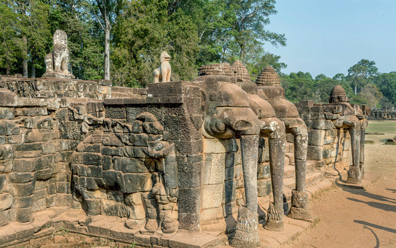
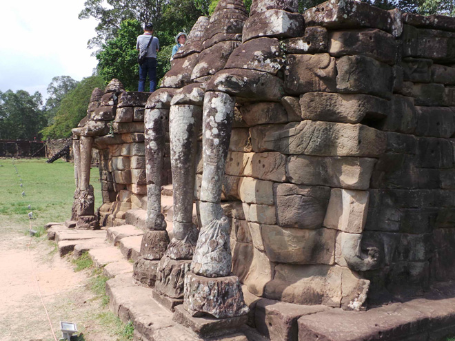
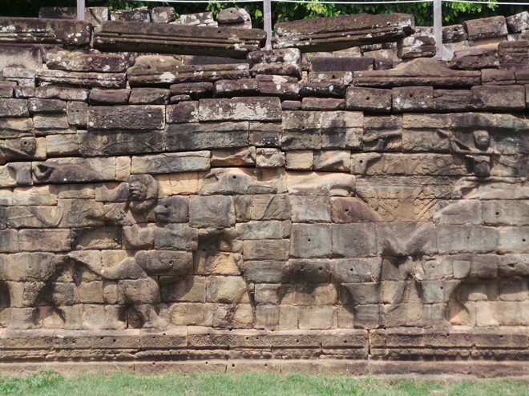
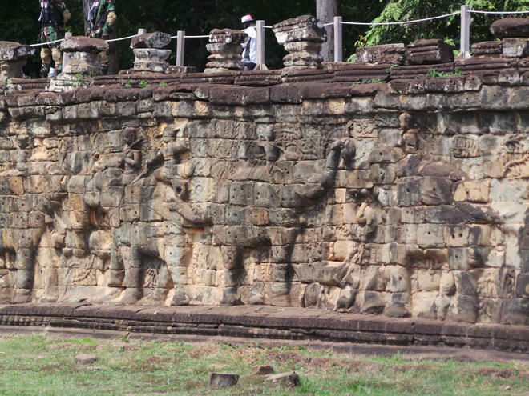
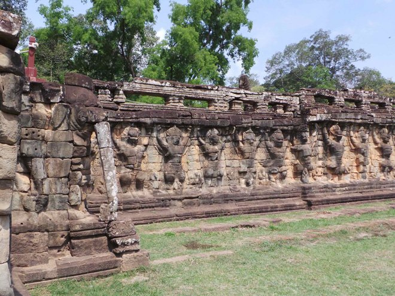
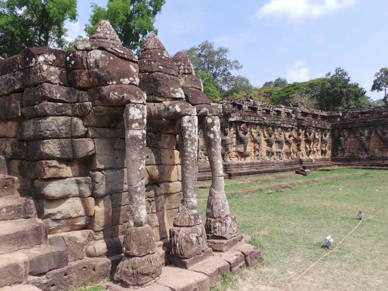
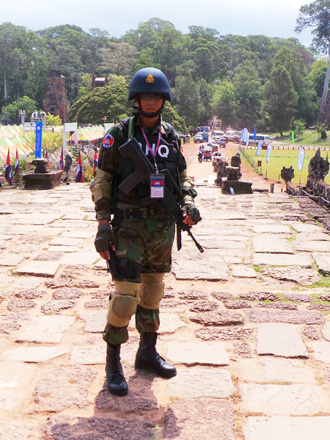
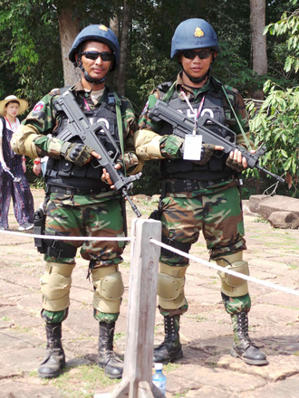
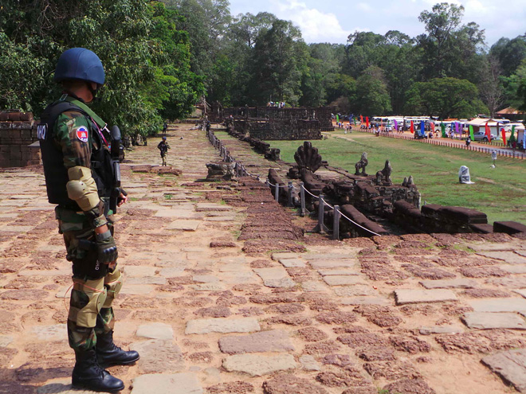
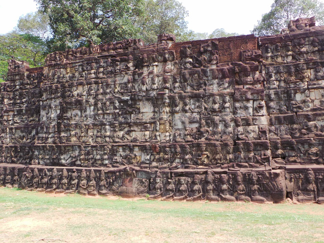
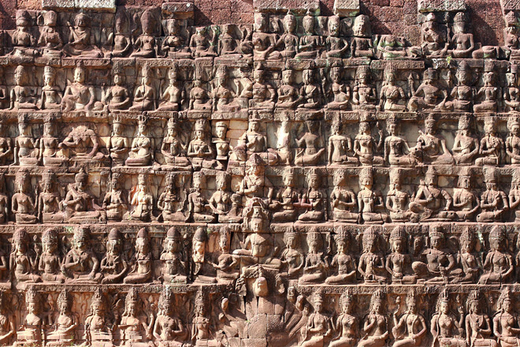
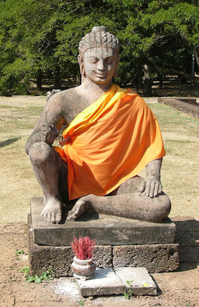
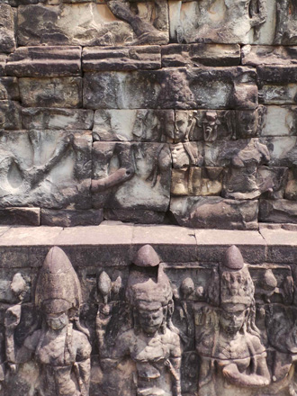
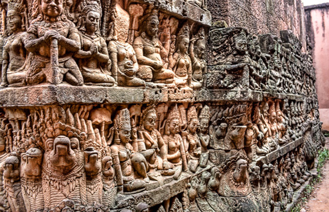
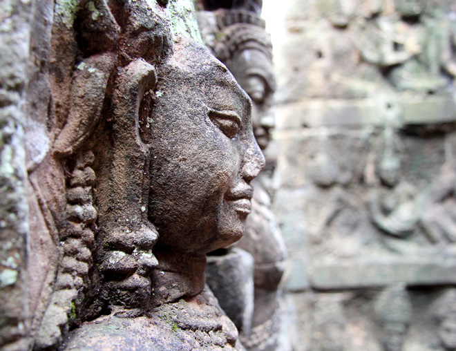
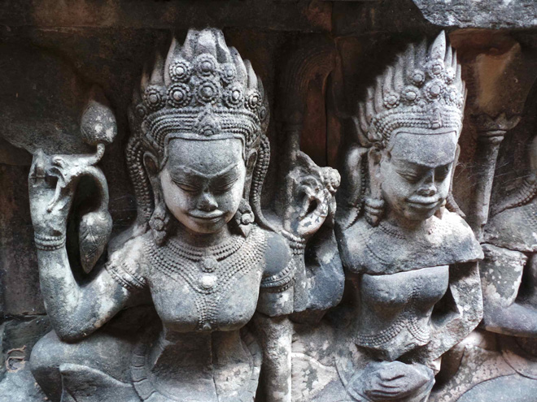
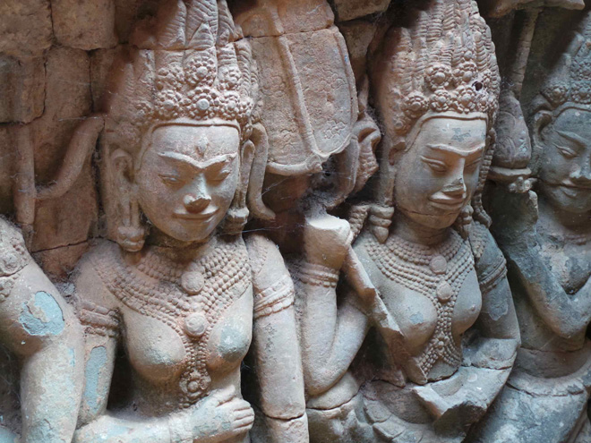
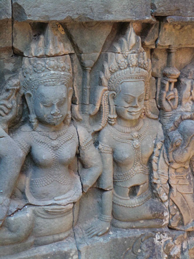
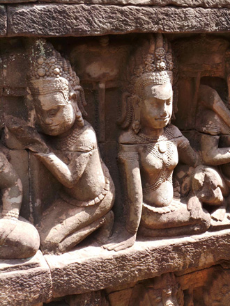
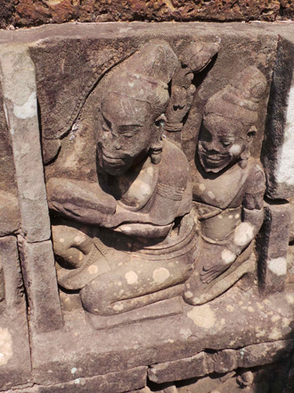
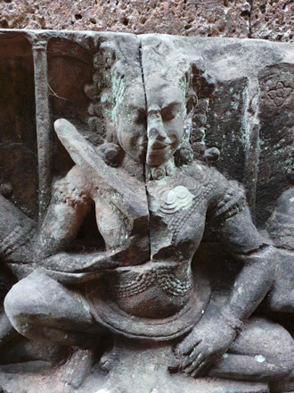
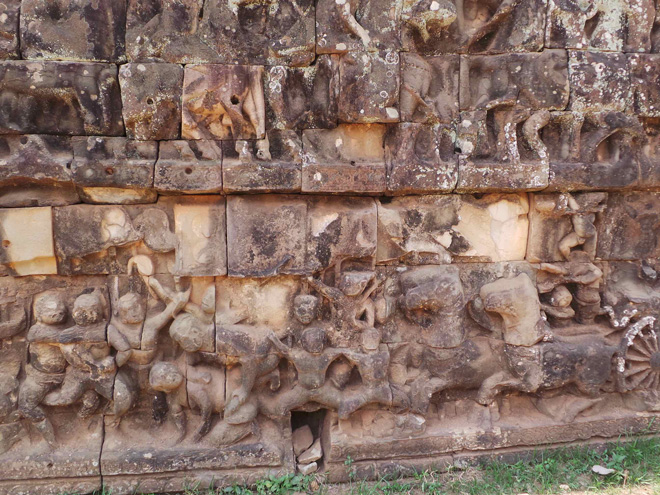